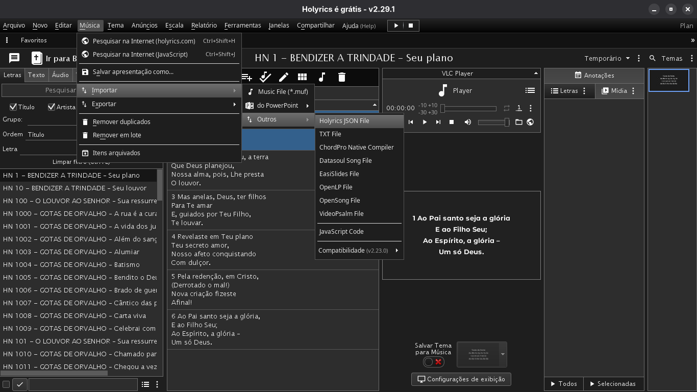

🎵 Holyrics File JSON
Este repositório disponibiliza um arquivo Holyrics File JSON para importar músicas diretamente no Holyrics.
📥 Baixar arquivo JSONComo importar
- Baixe o arquivo JSON.
- Abra o Holyrics.
- Acesse o menu Músicas.
- Clique em Importar.
- Selecione Outros.
- Clique em Holyrics File JSON.
- Localize o arquivo baixado.
- Confirme a importação.
Tutorial visual
Músicas → Importar → Outros → Holyrics File JSON

Observações
- O arquivo importará todas as músicas presentes no JSON.
- Se já existirem músicas com o mesmo nome, o comportamento dependerá das configurações do Holyrics.
- Recomenda-se fazer um backup antes da importação.